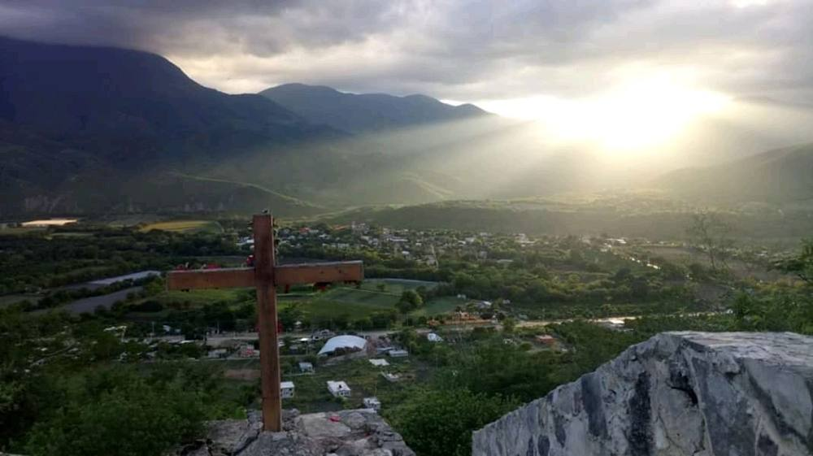
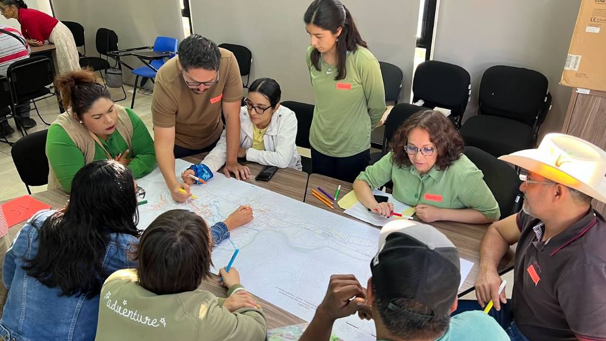
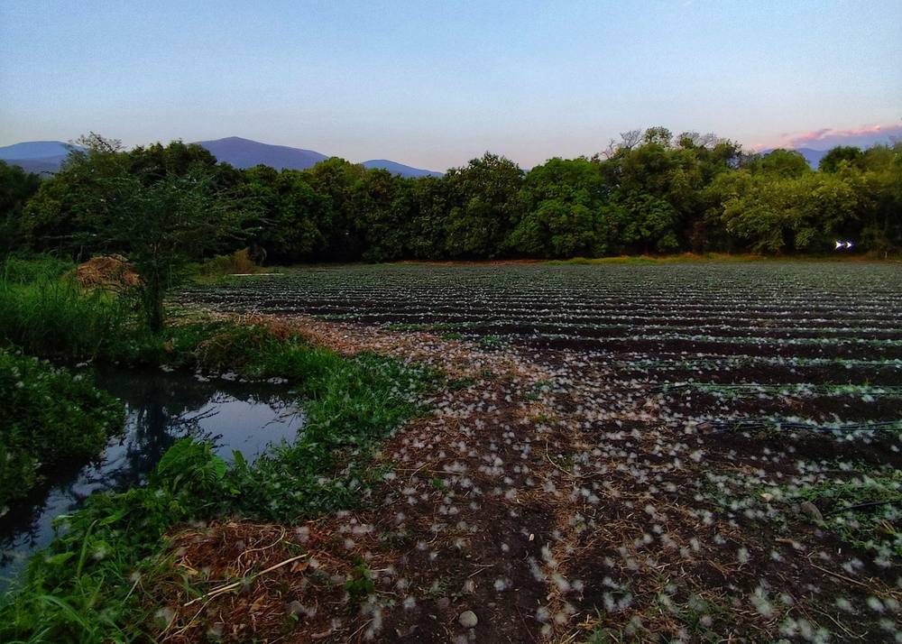
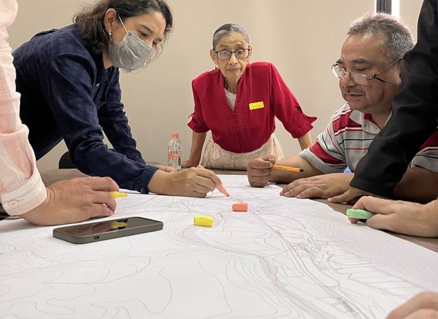

El valle se cuida desde adentro
Diez minutos para ver, con calma y a solas, qué andamos buscando con este proyecto, qué le toca a cada parte y cómo se amarra todo. Para llegar a la reunión hablando de lo mismo.
El valle es de quien lo cuida.
¿Qué pesa más: la parcela o el lote?
Toca Siguiente para ir poniendo cada peso. Después, el recorrido lo cuenta pieza por pieza, con nombres y fechas. Si tocas un peso, brincas directo a su pieza.
Un valle de riego metido en la Sierra, con bordes que se tocan
Un ecotono es la orilla donde se juntan dos mundos: el agua con las parcelas, las parcelas con el pueblo, el campo con el cerro. Esas orillas son las que mantienen amarrado al valle, y son lo primero que se pierde cuando el crecimiento va sin orden.
De dónde sale esto: el proyecto Ecotonos urbanos y rurales (FONFIVE FI-2024-18) y el Plan Guía 2045.
Hoy, brincarse las reglas sale gratis
El plan municipal (el PMDU) ya dice qué se puede construir en cada parte del valle y qué no. Lo que falta es que la gente lo sepa, que alguien lo haga valer y que responda a tiempo.
Las casas se van comiendo las parcelas
Una lotificación empieza con una barda, no con un techo. Para cuando hay techo ya es tarde, y nadie quiere ser el vecino que fue a acusar.
Nadie lleva el timón
No hay una mesa donde el municipio, los ejidos, las dependencias y la gente se sienten a decidir juntos; cada cambio de uso se arregla predio por predio.
Hay reglas, pero no pasa nada si no se cumplen
Las licencias de construcción no se cobran, no hay quién vaya a verificar, y si alguien reporta, el reporte no tiene a dónde llegar.
De aquí sale la apuesta. Sigue →
Lo que sí nos toca mover en dos años

El valle se cuida desde adentro: su gente conoce y valora sus ecotonos, conviene vivir de la agricultura, y los cambios irregulares de uso de suelo se detectan antes de consolidarse y reciben respuesta de la autoridad.
Tres verbos, tres frentes de trabajo:
Valorar
Que la gente sepa las reglas y le tenga cariño al valle. Componente 1.
Vigilar y responder
Que brincarse las reglas deje de salir gratis: el ejido, el municipio y un reporte con vigías. Componentes 2, 3 y 4.
Convenir
Que quedarse con la parcela convenga más que venderla. Componente 5.
Y un sexto componente que sostiene a los otros cinco: alguien tiene que llevar el timón y cuidar lo que se construya.
Valle conocido
Si el 1 falla, nadie sabe qué está prohibido ni dónde: «conoce y valora» se apaga, al 4 le llegan pocos reportes y mal ubicados, y las mojoneras que le ponen cara a los candados del 2 y a las reglas del 3 nunca existen.
Que la gente sepa qué se puede y qué no en cada parte del valle, y que le tenga cariño: para eso la campaña del PMDU y las marcas en los bordes.
- Campaña en 3 canales y 10 puntos (la delegación, la plaza, la telesecundaria, el campus, las tiendas) con la lona del Plan Guía como pieza central; un mapa en el celular para preguntar «¿esto se puede aquí?»; sesiones con las comunidades y el ejido. Marzo de 2027.
- Unas 20 marcas con código QR en los seis bordes del valle; seis de ellas son mojoneras con el texto de la zonificación, firmadas por el municipio y el ejido. Febrero de 2028.
- Dos apps para caminar el valle con audio, y una medición antes y después para saber si la gente sabe más y quiere más al valle.
Ejido corresponsable
Si el 2 falla, en tierra ejidal la asamblea sigue dando dominio pleno y la parcela se vende en cachitos: «se detecta y responde» queda cojo del lado ejidal, y el 5 se queda sin piso porque lotificar sigue siendo la salida fácil.
Que el ejido ponga su parte: la mitad ejidal de la prohibición de lotificar que pidió la propuesta síntesis del EURC.
- Reglamento interno del ejido de Concá con tres candados: nada de dominio pleno dentro del polígono, toda cesión de derechos pasa por la asamblea y respeta el derecho del tanto, y la zona de urbanización solo crece si la asamblea lo aprueba con el mapa enfrente. Asamblea en febrero de 2027.
- El mismo reglamento en El Salitrillo, en marzo de 2027.
- Los dos registrados en el RAN antes de junio de 2027.
Norma con consecuencias
Si el 3 falla, la verificadora no tiene formatos, ni tabulador, ni sueldo: el 4 detecta pero no puede responder, el 5 pierde el descuento en el predial, y «se detecta y responde» se apaga en la parte de responder.
Que el municipio tenga con qué responder, y que haya una puerta para ponerse en regla: la mitad privada de la misma prohibición.
- Tabulador de multas y licencias en la Ley de Ingresos 2027, mandado a la Legislatura antes del 30 de noviembre de 2026; desde enero las licencias sí se cobran.
- Formatos de acta, apercibimiento y suspensión; una ventanilla en la delegación un día a la semana para orientar, y un mapa de «dónde sí» se puede construir. Marzo de 2027.
- Los polígonos del Plan Guía metidos en la actualización del programa de centro de población de Concá.
Reporte y vigías
Si el 4 falla, la gente ve las bardas pero no tiene a quién decirle, o le dice y no pasa nada: «se detecta y responde» se apaga, la confianza que construyó el 1 se desperdicia, y los candados del 2 y las reglas del 3 se quedan en papel.
Que un reporte le llegue a alguien que vaya, revise y conteste, y que haya gente del valle recorriendo sus bordes: el comité de vigilancia que ya pedía el EURC, repartido por ecotono.
- Formulario con folio y un protocolo de siete pasos: acuse en 24 horas, visita en 15 días hábiles, aviso a quien reportó cuando se cierra, informe cada tres meses. Arranca en marzo de 2027.
- Una verificadora nombrada por el cabildo, con nombramiento que aguante el cambio de gobierno; capacitación en tres tiempos: funcionarios, cabildo, ejidos y gente.
- Un grupo de vigías por cada borde del valle y por distrito de riego, con acuerdo firmado, recorrido mensual y una silla en el Consejo Municipal.
Parcela que conviene
Si el 5 falla, «conviene vivir de la agricultura» se apaga: los candados del 2 y las reglas del 3 se sienten como castigo sin salida, crece la presión para echarlos atrás, y se viene abajo el supuesto de que vender no deja más que sembrar.
Que quedarse con la parcela convenga más que venderla: menos predial, mercados para lo que se cosecha y apoyos para frutales.
- Descuento en el predial para las parcelas que siguen produciendo dentro del polígono, en la misma Ley de Ingresos 2027.
- Padrón de productores por distrito de riego y una ventanilla en el campus, con servicio social, para armar las solicitudes de apoyo. Febrero de 2027.
- Mercado mensual en Concá, convenios con hoteles y restaurantes, y parcelas frutales de muestra. Primera temporada en junio de 2027.
Conducción y custodia
Si el 6 falla, nadie mide, nadie entrega y nadie ratifica: en marzo de 2028 se apagan los cinco a la vez, la verificadora se queda sin partida y las marcas sin quien las reponga.
Que alguien lleve el timón, mida y entregue, y que lo construido no se caiga cuando se acabe el dinero del FONFIVE.
- Una mesa con municipio, dependencias, ejidos, comunidad y UAQ que se junta cada cuatro meses, tres veces al año, con el Laboratorio llevando la minuta, y cada indicador con nombre y fecha.
- Una revisión a medio camino en junio de 2027, para entregársela al equipo que gane la elección antes de que tome posesión.
- Un plan de custodia: quién se queda con las marcas, las apps, el WhatsApp, el formulario, el padrón y la red de vigías; fondos gestionados con la cartera del Plan Guía; y una propuesta de figura permanente para cuidar el paisaje agrícola.
Tres verbos, seis componentes
Su gente conoce y valora sus ecotonos, conviene vivir de la agricultura, y los cambios irregulares se detectan antes de consolidarse y reciben respuesta.
Cómo se apoyan unos en otros (1 y 3 le sirven al 4; 2 y 3 le sirven al 5) está dibujado en el esquema completo. En cada componente, el botón «¿Y si falla?» muestra qué se cae con él.
Que el valle siga siendo valle en 2045

Contribuir a que el valle de Concá conserve viva su agricultura de riego, sus manantiales, su río y sus ecotonos, y a que su gente viva de ellos y decida cómo crece el valle.
Esa es la visión del Plan Guía 2045, y no depende solo de nosotros; por eso decimos «contribuir». Lo que sí vamos a medir cada año: cuántas hectáreas del polígono se vuelven lotes (que sean cada vez menos), cuánto verde queda en los bordes, cuánta tierra sigue sembrada, y que El Abanico y Los Nacimientos sigan protegidos.
Lo que tiene que salir bien y no está en nuestras manos
Toca cada uno para ver qué hacemos si falla.
El esquema completo
Toda la lógica en una sola imagen: el fin, el propósito, los tres frentes, los seis componentes y el cimiento. Las líneas continuas son lo que cada componente entrega hacia arriba; las punteadas, de qué depende. Toca cualquier componente para abrir su ficha.
Fin · 2045
Propósito · 2026 a 2028
Tres frentes
Seis componentes · lo que queda funcionando
Cimiento · supuestos
El detalle fino (indicadores, medios de verificación, costos y actividades) está en el marco lógico en Word, versión 3. Esta página es para entender la lógica; aquél, para trabajarla.
¿Estamos en el mismo canal?

Tres preguntas. Lo que respondas se guarda aquí mismo y lo ven los demás del equipo, para llegar a la reunión con todo a la vista.
Esta copia no está conectada con el equipo: tus respuestas se quedan en este navegador. Cópialas y mándalas por el chat.
Lo que ha respondido el equipo
Nadie ha respondido todavía.
Laboratorio de Desarrollo Rural · Facultad de Ciencias Naturales, UAQ Campus Concá · Grupo Colegiado Ciudad, Territorio e Investigación Proyectual, FI · Marcas en el territorio, FONFIVE 2026.
Toca una franja del dibujo o un botón para ver qué se juega en cada orilla.
¿Dónde lo estás viendo?
La página se acomoda distinto en un celular y en una pantalla grande. Puedes cambiarlo cuando quieras con el botón de arriba.